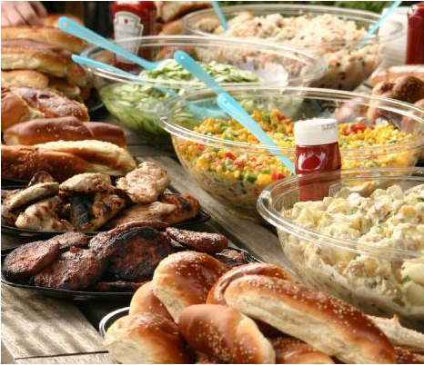

Sabbath & Kosher Food
Many Sabbath-observant students with varying travel and diet restrictions participated in our programs in the past. Those students all handled their needs well and enjoyed the trip like everyone else.
If you are Sabbath-observant and want to enroll in the study in China program, you should know that accommodations are possible. The program is not to be missed and it is definitely worth any minor challenges you may have in planning.
We understand and respect people's faiths and always try to help.

Travel:
The program director is always helpful by working with the students in planning around their Sabbath observance. These students never have to be on international flights or travel in or between cities during the Sabbath.
The past students did not experience any problems in planning around the Sabbath and still were able to fulfill all requirements of the program.
When we have Sabbath-observant students, the program will try to book the group’s international flights away from hours of Sabbath-observance, to avoid flying from Friday evening to Saturday evening.
If, for some special reasons, the group has to depart for China during Friday and Saturday, the program will arrange for Sabbath-observant students to fly to Beijing one or two days earlier (this may involve a small extra cost for the hotel, etc.). The local travel agency will help book the hotel and arrange airport pick-up upon arrival if needed. And the program director also arrives in Beijing a few days before the group.
In some cases, the travel agency will try to arrange the group itinerary away from the hours of Sabbath-observance, if possible.
Kosher:
Kosher food is a bit of a tougher question but the past students also managed it quite fine.
Getting delivery from Chabads is not a difficult thing in most of the cities (e.g., Beijing, Shanghai, and Hong Kong). In the majority of the cities included in the program (Shanghai, Beijing, Hong Kong) there are active Chabads that have a restaurant and usually a shop that sells some kosher items.
Nanjing is a city where the program stays for about 2 weeks, but it is only one hour away from Shanghai by high-speed trains. It takes just one quick phone call or an email to order delivery from Chabads in Shanghai to Nanjing.
During our stay in Nanjing, at the request of the program director, the hotel can give Sabbath-observant students permission to cook in the kitchen with their own utensils.
In each of those cities (especially in Nanjing), there are large Walmart stores that carry some American products that are kosher (no meat, however). When traveling with the group, such students sometimes try to eat rice and vegetables with the group, or eat at some vegetarian restaurants.
In the past, students brought with them a good amount of kosher items that were vacuum-sealed and non-perishable. Although it was a bit of an inconvenience to have a separate piece of luggage to transport, yet it definitely worked out well, as the students were always able to resort to what they had brought with them.
Overall, with proper planning ahead of time while in NY and looking into the Chabad locations relative to the cities, it is possible to do the trip "kosher style."
More Questions?
If you still have questions, we can try to connect you with some students/faculty who went on our trip in the past. They will be happy to share their experience with you.